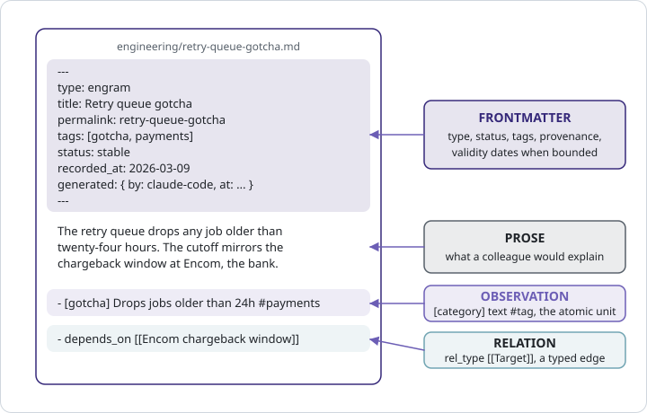

5 Terminology
Every word in this book has a file behind it. That is the pleasant thing about Crystalline’s vocabulary: a domain is a folder you can list, an engram is a file you can print, an address is a string you can paste, and a status is a line in that file you can change with whatever editor you already own. So this chapter does not open with a table. It opens the retry-queue engram from Part I, the one Ripley’s agent captured on a Monday in March, and reads it from the top, stopping at each term as it comes up. By the end you will have met every word the rest of the book leans on, and seen each one on disk.
5.1 Domains
Start with where the file lives: ~/knowledge/engineering/retry-queue-gotcha.md. The folder is a domain. A domain is a registered folder of knowledge with a MANIFEST.md at its root, and the manifest is what makes it more than a folder. It says what the domain covers and when an agent should look there, and those bullets are what the routing prompt is built from at the start of every session. Registering is one command, crystalline domain add engineering ~/knowledge/engineering, and the name you give it there is the name the agent uses from then on. Tyrell has two domains, engineering for the payments service and everything around it, and clients for the people it sells to. The line between them is who could vouch for a change, the engineers for one and the people who sell for the other, and chapter 13 makes that the rule for a shared domain. A domain can also be virtual, living in the database with no folder at all, and it carries the same manifest and answers to the same tools.
Inside a domain, subfolders are topic prefixes. A singleton engram stays at the root; once a cluster forms, it gets a folder, and the folder becomes part of the engram’s address. The manifest’s ## Notes for Agents section is where the team writes down what it decided.
5.2 Engrams
Now the file itself, as it sits on Tyrell’s disk; everything in the rest of the chapter is a line of it:
---
type: engram
title: Retry queue gotcha
permalink: retry-queue-gotcha
tags:
- gotcha
- payments
status: stable
recorded_at: 2026-03-09
generated: { by: claude-code/2.1.233, at: 2026-03-09T16:42:10+00:00 }
---
The retry queue drops any job older than twenty-four hours instead of
retrying it. The team calls the queue the sin bin. The cutoff is not a
tuning choice: it mirrors the chargeback window at Encom, the bank
behind the card payments.
- [gotcha] The retry queue drops jobs older than 24h #payments
- [fact] The 24h cutoff mirrors Encom's chargeback window #payments
- depends_on [[Encom chargeback window]]An engram is one markdown file holding one unit of knowledge, with a YAML frontmatter block on top. If the word sounds like something from a starship’s sickbay, that is because Star Trek borrowed it from the same neuroscience textbook Crystalline did.

The frontmatter is identity and state. type says what kind of thing this is, engram by default, with guide, decision, architecture, runbook and reference as the recommended alternatives. title is the human name and the thing other engrams link to. permalink is derived from the title and is the stable half of the address. tags are what a search or a filter narrows on. status says whether the knowledge holds, and it gets its own section below. recorded_at is the day it was captured, and generated records who wrote it and when. When the knowledge is time-bounded, valid_from and valid_to sit here too; this engram has neither, which means it has always held and holds until further notice. Both type and status are required and free form; the recommended values are guidance, never an enumeration a write is rejected for.
Then the prose, which is the explanation a colleague would give across a desk: what the thing is, what it is called and why it is the way it is. The prose is what search matches on and what a reader reads first.
Then the observations. A top-level bullet of the form - [category] text #tag is an observation, and observations are the atomic unit of an engram’s body: the fact, the decision, the gotcha, each indexed on its own line so a search hit can point at it. The category in brackets is free text, and the precise ones earn their keep: decision, fact, pattern, gotcha, convention, lesson, risk, idea. A trailing #tag attaches the tag to that observation.
And then the relation. A top-level bullet of the form - rel_type [[Target]] is an edge in the knowledge graph, typed by whatever word comes first, depends_on here, supersedes and superseded_by in chapter 3, relates_to when nothing sharper fits or a quoted phrase for a multi-word type. The target is a title, resolved within the domain, or [[domain:Title]] across domains. The target’s page shows the edge back as a backlink, and a target that does not exist yet is an unresolved link the sweep will mention.
One topic per engram is the rule that keeps all of this legible. When the topic grows, the engram is edited, not forked; when it splits, it splits by granularity, a distilled summary beside a source engram holding the full text, linked both ways.
5.3 The open format underneath
None of that is a private format. The engram extends Google’s Open Knowledge Format, OKF, version 0.2: plain markdown with YAML frontmatter, readable by any OKF tooling, with Crystalline’s routing, temporal and graph conventions layered on top. Unknown frontmatter keys are preserved through every write and edit, so an OKF document from somewhere else drops into a domain intact and comes back out intact. The generated block is the provenance record, and the index.md Crystalline writes at a domain’s root declares the format version for anything that browses the folder without Crystalline running. Your knowledge stays files in a folder that any editor opens and any diff tool diffs, whatever tools come next.
5.4 Statuses
status is the field a reader that acts on knowledge needs most, because it answers the one question a page cannot answer about itself: does this still hold? stable is the default and the word for knowledge that holds now; the older spelling current means the same state, and a filter on either finds both. Before stability there are draft, proposed, idea and poc, for knowledge that is on its way. implemented is on the recommended list too, and like any status outside the retirement set it ranks at full strength.
After stability there is the retirement set, four words that each mean one thing. deprecated says do not do this again. superseded says a newer engram replaced this one, and the two are linked. archived says retired but kept for the record. legacy says still true of the old installation that is somehow still running, like the terminals aboard the Nostromo, but not to be built on. A status in the retirement set fades the engram in search ranking, gently and never to zero, so current knowledge surfaces first and the past stays one scroll away, dated. Retiring is how a fact leaves the present without leaving the archive; deleting is for mistakes.
5.5 Salience
Most engrams are ordinary, and that is fine. A few are the ones everything else hangs from: the rule that explains a dozen other rules, the insight that ended a week-long bug. Those can carry a salience, a number from zero to ten in the frontmatter, and hybrid search adds a small, bounded lift for it, so a salient engram ranks above equally relevant neighbours while relevance keeps the upper hand and nothing is ever filtered out by it. It is set sparingly at capture time, and raised later when an engram turns out to have been the key to a task. The retry-queue engram carries none, and most never will.
5.6 Addresses
Every engram has an address, crystalline://engineering/retry-queue-gotcha: the scheme, the domain, the permalink. It is the one absolute form. An agent hands it to another agent, build_context anchors on it, Fluid copies it to the clipboard in one click, and it survives a commit message, a ticket or a chat. A folder prefix appears in the permalink, crystalline://engineering/queues/retry-queue-gotcha if the engram had been filed under queues/, and a trailing /* anchors the whole folder at once.
The rule that trips people up is the scheme-less one. An identifier without crystalline:// is domain-relative: retry-queue-gotcha, together with the domain named beside it, never engineering/retry-queue-gotcha, which would be read as a folder called engineering inside whatever domain you meant. The same holds for links: [[Retry queue gotcha]] resolves in the domain the linking engram lives in, and [[engineering:Retry queue gotcha]] reaches across. Either the address is absolute and carries its domain, or it is relative and the domain comes from context. There is no third form, and that strictness is what lets a permalink stay short.
5.7 The MANIFEST, up close
The last term is the first file in every domain. MANIFEST.md is an engram of type: manifest with the permalink manifest, which means it is read, indexed and edited with the same tools as everything else. Its job is routing, and two sections do it. ## Scope says what the domain covers. ## When to Use says when an agent should route a task here, and those bullets, one line per domain, are what become the session-start briefing. ## Notes for Agents, the third section the scaffold creates, holds the conventions the agent should follow inside this domain, the folder layout above all. Two optional sections come later. ## Tag Aliases folds an old tag name into its canonical one so old searches keep working. ## Provisioning names the folders of skills, slash commands, subagent definitions and MCP server configs a domain ships beside its knowledge. The tools that knowledge depends on travel with it, and install into a harness once a person says yes. That section gets a chapter of its own (Chapter 15). Tyrell’s engineering manifest, a few months in:
---
type: manifest
title: engineering
permalink: manifest
tags:
- manifest
status: stable
recorded_at: 2026-03-02
---
# engineering
## Scope
- The payments service, its retry queue and the services around it
- Deploy runbooks, team conventions and the decisions behind them
## When to Use
- Route questions about the payments service, the retry queue or a deploy here
- Check here before touching anything the team has already been burned by
## Notes for Agents
- Runbooks live under runbooks/, gotchas at the root
- One engram per gotcha; edit the existing one before writing a secondWrite the When to Use bullets the way you would brief a new hire on which drawer holds what. They are read by a machine, but they are read the way a person reads a label.
The manifest being an engram is why routing needs no separate configuration: crystalline prompt system parses each registered domain’s MANIFEST.md, takes the ## When to Use bullets, falls back to ## Scope when there are none, and emits one routing line per domain plus the behaviour rules. Two filenames in a domain are reserved and never engrams: index.md, the table of contents Crystalline regenerates after every write so the folder navigates itself on a git forge, and log.md, reserved but never generated. A title that would slug to either is refused.
In his second month Deckard starts the clients domain, because the team keeps re-explaining which customer is behind which integration. His first engram is about Weyland-Yutani’s settlement batch, and it needs to say that the batch is exactly the thing that hits the retry cutoff. He types - depends_on [[Retry queue gotcha]], and the sweep tells him the link does not resolve, because clients has no engram by that title. He changes it to [[engineering:Retry queue gotcha]] and the edge appears, with a backlink on the engineering side that nobody on the engineering side had to write.
A week later Ripley reviews his pull request on the settlement job and wants the reasoning in the record. She pastes crystalline://clients/weyland-yutani-settlement-batch into the description. Her reviewer’s agent reads that address, walks one hop into engineering and comes back with the cutoff, the bank rule and the runbook. Two domains, one edge and the string in the pull request is still readable in a year.
You now speak the language. The rest of the book is conversation.
A domain is a registered folder with a MANIFEST.md whose When to Use bullets route an agent to it; an engram is one markdown file with YAML frontmatter, prose, observations of the form - [category] text #tag and relations of the form - rel_type [[Target]], all on Google’s Open Knowledge Format so nothing is locked in. status says whether knowledge holds, with stable as the default and deprecated, superseded, archived and legacy as the retirement set that fades in ranking without disappearing; salience is a rare, bounded lift. The absolute address is crystalline://domain/permalink, and anything without the scheme is domain-relative. The manifest is itself an engram, which is why routing needs no configuration of its own.